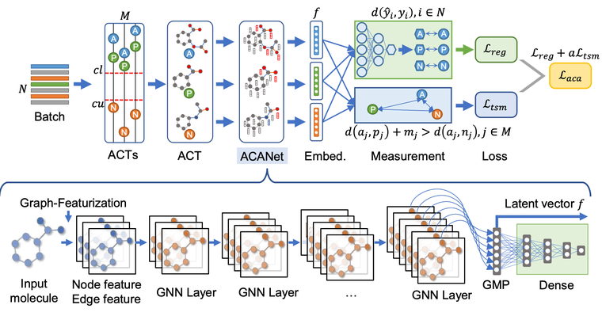
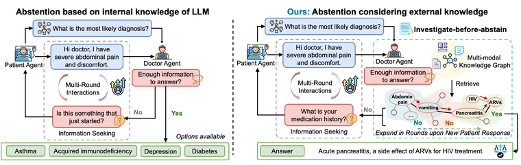
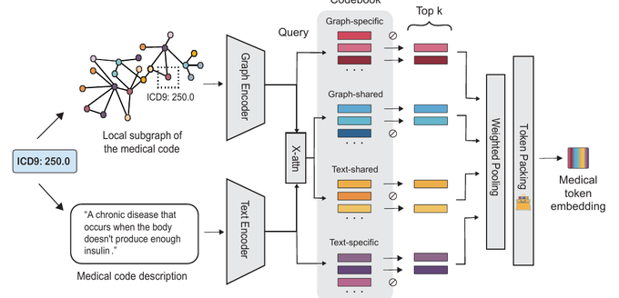
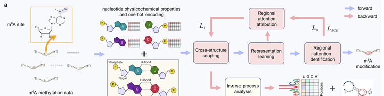
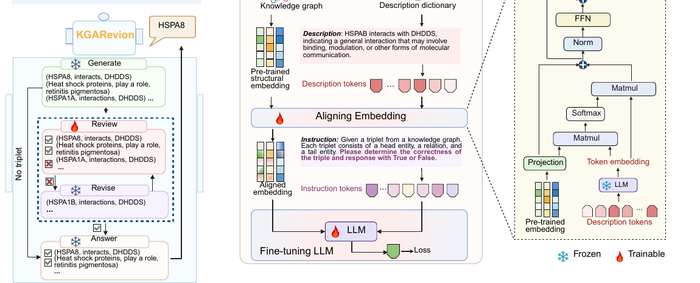
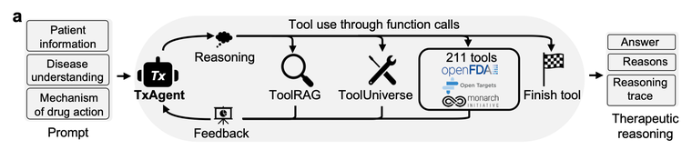
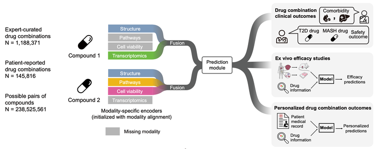
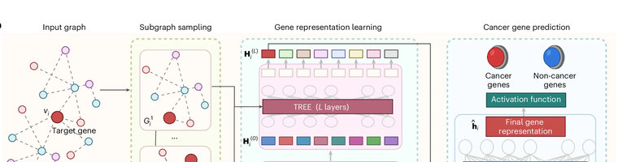
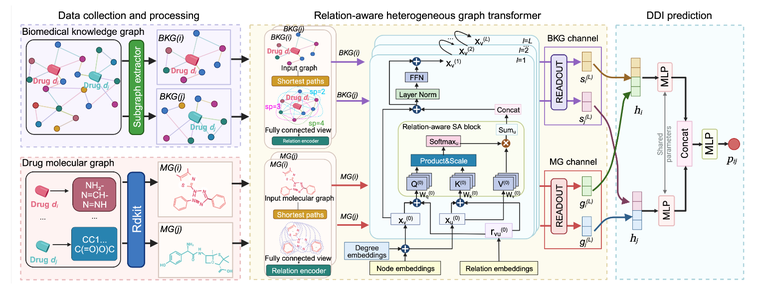
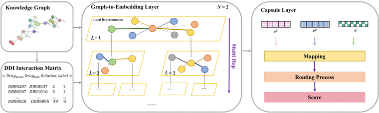

Xiaorui Su
Postdoctoral Fellow · Zitnik Lab, Harvard Medical School
Building AI that holds up in the clinic, with reasoning that stays faithful to the evidence.
About
I'm a Postdoctoral Fellow at Harvard Medical School, where I work in the Zitnik Lab with Prof. Marinka Zitnik. Previously, I completed my Ph.D. at the University of Chinese Academy of Sciences and was a visiting student at the University of Illinois Chicago, working with Prof. Philip S. Yu.
I build AI agents for medicine — systems that reason over biomedical knowledge and verify their own evidence, so their outputs are ones clinicians and scientists can trust. My work spans medical reasoning, drug and therapeutic outcome prediction, and clinical decision making, connecting large biomedical knowledge bases with models that can explain and justify what they recommend.
My work has been published in leading venues across machine learning and biomedicine, including Nature Biomedical Engineering, Nature Communications, npj Digital Medicine, Communications Biology, ICML, ICLR, AAAI, and IEEE Transactions on Knowledge and Data Engineering.
📢 I am actively looking for faculty and industry positions starting Fall 2027. Please kindly reach out to me for any opportunities. Thanks!
Research Interests
- AI agents for medical reasoning — tool-using agents that reason across biomedical knowledge, clinical questions, and treatment decisions, grounding every answer in verifiable evidence (KGARevion).
- Knowledge-grounded clinical AI — foundation models and representations of clinical codes and records that make prediction accurate and evidence-grounded (MedTok).
- AI for drug discovery & biomedical science — models for drug outcomes, drug interactions, and cancer discovery (Madrigal, DDI, Nature BME).
News
- Aug 2026Invited talk (forthcoming), Towards Agentic AI in Biomedical Reasoning Problems, at the Joint Statistical Meetings (JSM), USA.
- 2026Activity Cliff-Informed Contrastive Learning accepted (in principle) at Nature Communications.
- Jan 2026KnowGuard — knowledge-driven abstention for multi-round clinical reasoning — accepted at ICLR 2026.
- Dec 2025Co-organizing CURE-Bench at NeurIPS 2025, the first benchmark on AI reasoning for therapeutics.
- Jul 2025RNA m6A modification paper published in Communications Biology.
- May 2025MedTok accepted at ICML 2025.
- Mar 2025Madrigal preprint on drug-combination outcomes released.
- Jan 2025KGARevion accepted at ICLR 2025.
- Jan 2025Cancer-gene discovery paper published in Nature Biomedical Engineering.
- Jul 2024Received the Chinese Academy of Sciences President Award (Excellent Prize); joined the Zitnik Lab at Harvard Medical School.
- Feb 2024Dual-Channel DDI (TIGER) accepted at AAAI 2024.
- 2023KG2ECapsule published in IEEE TKDE.
Selected Publications
† equal contribution · ‡ corresponding author · full list on Google Scholar.










Talks & Service
- Aug 2026Invited talk (forthcoming): Towards Agentic AI in Biomedical Reasoning Problems. Joint Statistical Meetings (JSM), USA.
- Dec 2025Co-organizer, CURE-Bench at NeurIPS 2025 — the first benchmark on AI reasoning for therapeutics.
- Apr 2025Invited talk: KGARevion: A Knowledge Graph Agent for Complex, Multi-Strategy Reasoning. Bio-IT World Conference & Expo, Boston, MA.
Education
-
University of Chinese Academy of Sciences2019 – 2024Ph.D. in Computer Science · Advisor: Prof. Lun Hu
-
University of Illinois at Chicago2023Visiting Ph.D. Student · Advisor: Prof. Philip S. Yu
-
Xiamen University2015 – 2019B.E. in Software Engineering